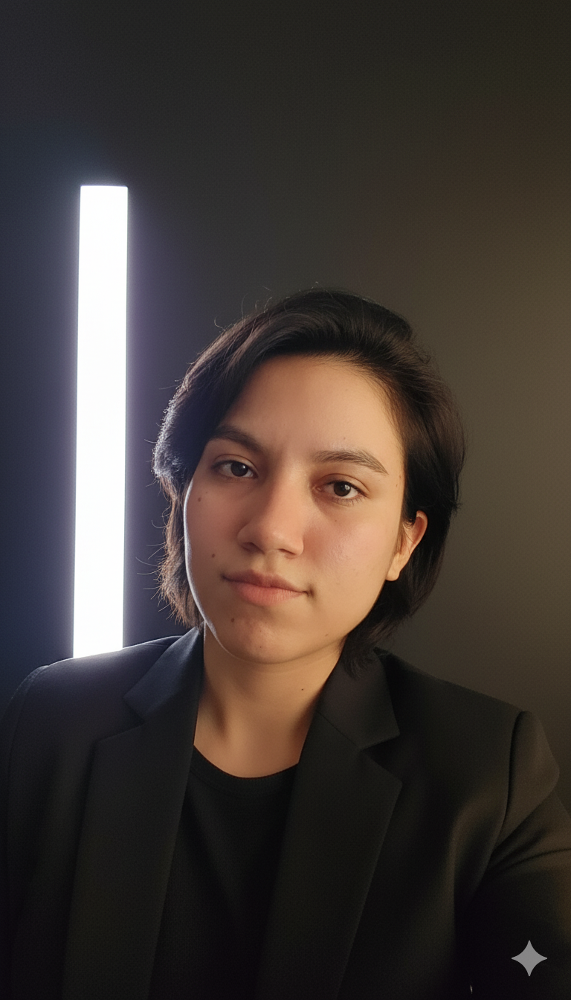

Banca y análisis
Lectura útil para roles con foco en control, análisis, seguimiento de información y criterio cuantitativo.
Python
Excel
riesgo
reportes
Estudiante de Economía | Soporte analítico, administrativo y comercial
Perfil orientado a análisis de información, soporte institucional, atención a usuarios, coordinación de proyectos y trabajo con herramientas digitales.

foto-perfil.jpg.
Estudiante de Economía de la Universidad Nacional de Piura, perteneciente al décimo superior y actualmente en 9.º ciclo, con experiencia en análisis de información, soporte administrativo, atención a usuarios, gestión documentaria, coordinación de proyectos y trabajo con herramientas digitales.
Manejo Excel, Word, PowerPoint, Python, Stata, EViews y Power BI, con capacidad para sistematizar información, elaborar reportes, sostener procesos y adaptarme a distintos contextos de trabajo con orden, criterio y responsabilidad.
Lectura útil para roles con foco en control, análisis, seguimiento de información y criterio cuantitativo.
Adecuado para funciones de documentación, trazabilidad, coordinación y orden institucional.
Foco en comunicación con usuarios, seguimiento de contactos y apoyo comercial básico.
Perfil visible en tareas de actualización de registros, consistencia de datos y precisión operativa.
Experiencia en acompañamiento, estructura de sesiones y adaptación a distintos públicos.
Aplicación de Python a análisis financiero, automatización básica y estructuración de proyectos propios.
Enfoque principal: soporte administrativo, gestión documentaria y organización institucional.
Enfoque principal: coordinación de actores, estructura de proyectos y cumplimiento de objetivos.
Enfoque principal: control de registros, facturación y soporte de operaciones.
Enfoque principal: atención al usuario, seguimiento de contacto y organización de información.
Enfoque principal: análisis financiero, uso de Python y criterio cuantitativo.
Enfoque principal: comunicación digital, contenido y posicionamiento.
Enfoque principal: enseñanza, liderazgo de grupos y disciplina formativa.
Economía (en curso, 9.º ciclo)
Décimo superior de la carrera. Formación en econometría, estadística, análisis de datos, economía financiera e investigación aplicada.